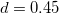

| 心理学のためのサンプルサイズ設計入門 |
| 心理学のためのサンプルサイズ設計入門 |
心理学の論文では、2-3要因は当たり前、4-5要因も見かける
統計学の論文では、1要因の被験者間バランスデザインを想定したものが多く、2要因混合デザインですら複雑なものに相当する
主効果と交互作用の違い、アンバランスデザイン、等分散性の仮定、球面性の仮定、など統計的な懸案事項が山ほどある
同条件下で異なる刺激の提示を被験者内で繰り返した場合、測定値を平均して分析にかけることが多い。
 「繰り返し」数は結局のところ「サンプルサイズ」としての単位には含まれず、被験者の人数のみが問題とされる。
「繰り返し」数は結局のところ「サンプルサイズ」としての単位には含まれず、被験者の人数のみが問題とされる。
Westfall (2016) によるPANGEA (Power ANalysis fo GEneral Anova desings) 1 [8]
以下のものはすべて要因として扱う：
研究者にとって主要な関心のある変数（群、条件の別など）
従属変数のばらつきを説明しそうな他のグループ変数（参加者、材料の違いなど）
例えば、A群とB群のいずれかに割り付けられた被験者について、いずれの群も刺激PとQが提示されるが、材料XとYは群間でカウンターバランスを取って提示したとする。 この場合、被験者は（いずれかの群にしか所属しないので）群要因にネストし、 材料も（群AにはX、群BにはYというようになっているので）群要因にネストしており、群要因と刺激要因はクロスしていることになる。
被験者 |
群 |
刺激 |
材料 |
1 |
A |
P, Q |
X |
2 |
A |
P, Q |
X |
|
B |
P, Q |
Y |
N |
B |
P, Q |
Y |
通常であれば、このデザインは一要因被験者内計画（刺激要因の水準P, Qを被験者内で操作）として扱われることが一般的だが、実際はもっと複雑。
Westfall, Judd, & Kenny (2015) は、固定要因と変量要因を区別するための経験則として、追試するときに変えても良いと思えるかどうかで判断するという方法を提案。[9]
さらに複雑なデザインについては、Judd, Westfall, & Kenny (2017) を参照。[2]
PANGEAでは、固定効果も変量効果も含むすべての要因を組み合わせた際の各セルの観測数を繰り返しという。
効果量
Cohenのがデフォルトで入っている2
サンプルサイズ
繰り返し数
分散分割係数 variance partitioning coefficient
複数の変量要因が含まれる場合の、変量要因の分散の割合（変量要因の主効果、変量要因同士の交互作用、固定効果と変量要因の交互作用）
デフォルトでは、低次の要因ほど多くの分散が割り当てられる
効果量の値をわずかに変更しただけでも、検定力にかなりの影響が出る。
PANGEAは混合モデルを用いた分散分析を想定している
効果量を設定する際に関連する現象を全く見いだせないとしたら、それは研究しようとしている効果や現象を既存の研究の文脈に適切に位置づけられていないからではないか
Footnotes
| 心理学のためのサンプルサイズ設計入門 |